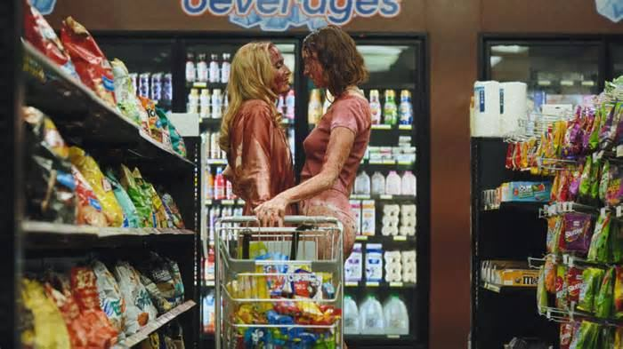

‘Adolescencia, sexo y muerte en Campamento Miasma’: un orgasmo de cine

Una obra que renueva el cine de terror desde la nostalgia de esa edad que va desde la pubertad a la primera juventud, y reconduce los códigos del terror de los años ochenta a partir de una cinefilia relacionada con lo ‘queer’
El cine es una droga. El amor, el deseo, la pasión y el delirio por las películas —por el hecho en sí, el de la mirada, e incluso por el tacto de la cinta física o del celuloide— pueden llevar al orgasmo. Se fornica con el audiovisual, una idea que ya nos habían trasladado dos genios. David Cronenberg en Videodrome (1983), con su televisión sexualizada y la vagina alojada en el estómago de James Woods, donde se introducían las cintas de vídeo como forma de erotización del consumo masturbatorio cinematográfico. E Iván Zulueta en Arrebato (1980), cuando Eusebio Poncela era devorado por el cine, adicción vampírica casi más peligrosa que la heroína.
Intérpretes: Hannah Einbinder, Gillian Anderson, Amanda Fix, Arthur Conti.